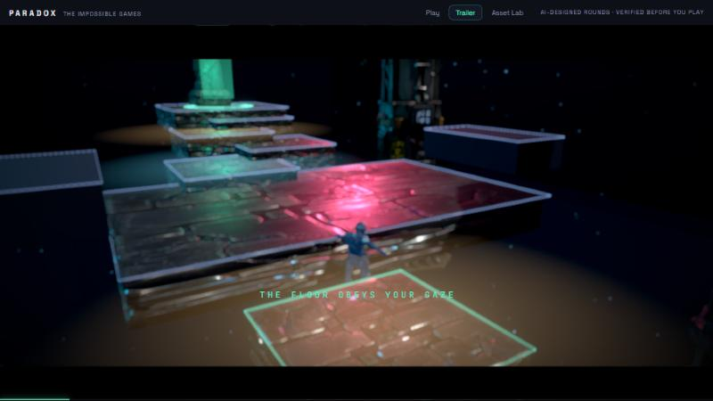
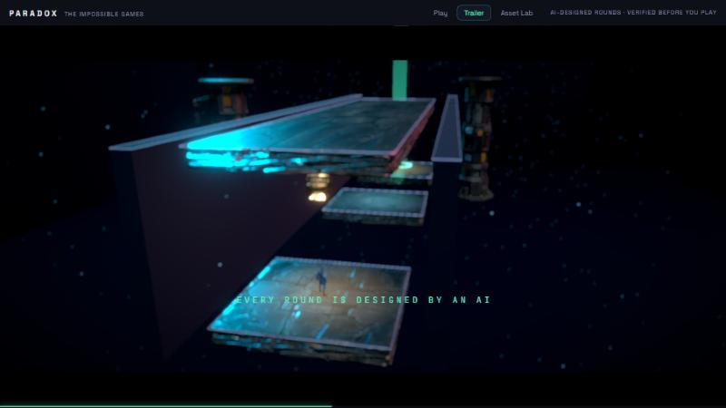
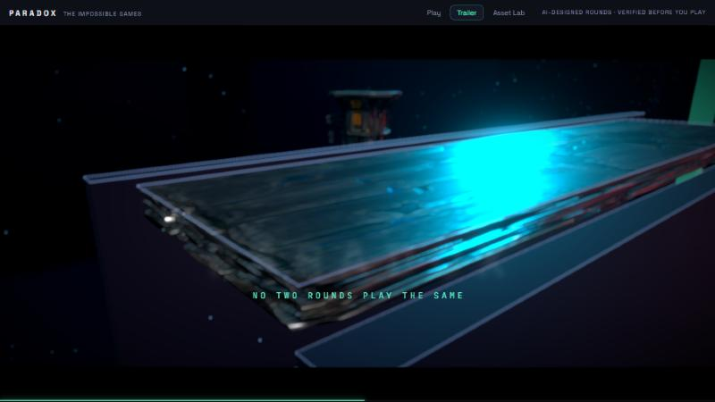
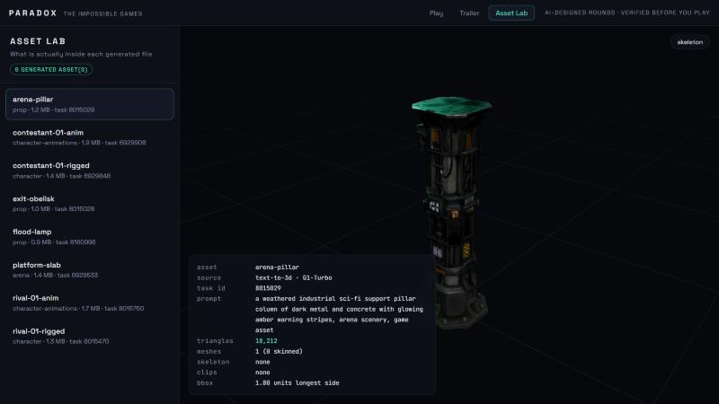
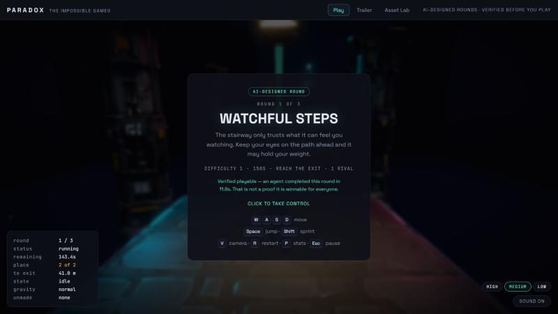
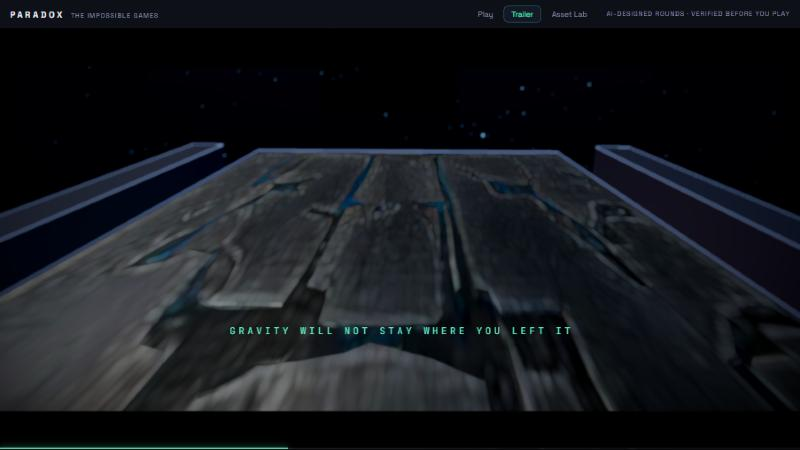
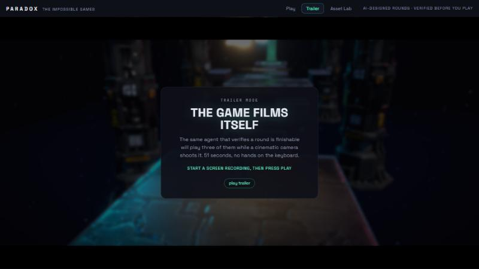

Most generative-3D projects use AI to make assets: a model, a texture, a scene. The assets get better; the game underneath stays the same.
PARADOX asks a different question:
What if the AI designed the rules of physics instead of the furniture?
Every round, a model proposes a challenge: which arena, what the laws of that arena are for the next ninety seconds, what counts as winning, how long you have. One round the platforms stop existing while you look at them. The next, gravity turns over on a countdown and you finish the course walking on the ceiling.
The player's job is not to traverse a level. It is to work out what is true here before it kills them.
And because an AI that invents physical laws will cheerfully invent an impossible one, the game plays each round itself, headless, before a human is allowed in.


A complete, playable run: three rounds of rising difficulty, with rivals, a timer, a result screen and a summary.
| Arenas | 2, hand-authored, verified by ballistics analysis |
| Rule types implemented | 3 (CONDITIONAL_PLATFORM, GRAVITY_DIRECTION, OBJECT_STATE) |
| Lux3D assets in gameplay | 6 (platform slab, contestant, rival, obelisk, pillar, flood lamp) |
| Lux3D API calls | text-to-3D, auto-rigging, animation retargeting, used in a chain |
| Automated tests | 135, including a headless agent completing a full arena |
| Runs offline | Yes — the whole game plays with no network at all |
THE FALSE FLOOR. Platforms are solid only while you are not looking at them. To cross, you must turn away from the ground you are about to stand on and trust it. Two details make it a mechanic rather than a nuisance: a hysteresis band on the view cone so a platform at the edge of vision latches instead of flickering, and an exemption for the platform under your feet — you can unmake the floor ahead of you, never the floor beneath you.
GRAVITY ZERO. Gravity inverts along Y on a schedule, after a visible countdown. The character, the camera and the character's own body all re-base their idea of "up", and you cross the ungapped ceiling while the floor is unreachable. The arena's ceiling is continuous on purpose: inverting must always be survivable, so the danger lives in the return, which is on a clock you can see.
UNMADE GROUND. Both at once, plus platforms blinking on their own timer.

Lux3D is not decoration here. Every character and every prop the player sees was generated by it, and the auto-rigging and animation-retargeting APIs are what make the contestants move.
This is the part we are proudest of, and it is three Lux3D endpoints chained:
text-to-3D ──▶ /animations/rig ──▶ /animations/retarget ──▶ contestant.glb 336s 59s 17s (10 clips, in-place)
Real task ids from the run: 6929612 → 6929848 → 6929908.
Auto-rigging accepted a text-generated humanoid on the first attempt. That was the single biggest risk in the project and it came back clean in 59 seconds. Retargeting then delivered 10 of 10 requested clips — Idle_Loop, Walk_Loop, Jog_Fwd_Loop, Sprint_Loop, Jump_Start/Loop/Land, Roll, Hit_Knockback, Death01 — in a single combined, in-place GLB that drops straight into a THREE.AnimationMixer.
Because the result URLs stay fetchable for two hours, each stage's output feeds the next without uploading anything.
We ran the chain twice, and the second run is the more useful data point: the rival was generated with G1-Turbo instead of G1 — 116 s instead of 336 s — and auto-rigging accepted it just as readily, delivering 10/10 clips again. For characters that will be seen at a distance, the fast model is enough, and it turns an eight-minute pipeline into a three-minute one.
| Asset | Lux3D task | Endpoint | Where you see it |
|---|---|---|---|
platform-slab | 6929533 | text-to-3D G1-Turbo, 104s | Every platform in both arenas |
contestant-01 | 6929612/848/908 | text-to-3D G1 → rig → retarget | The character you control |
rival-01 | 8015374/470/750 | text-to-3D G1-Turbo → rig → retarget | Your opponent |
exit-obelisk | 8015028 | text-to-3D G1-Turbo, 110s | Marks the exit in both arenas |
arena-pillar | 8015029 | text-to-3D G1-Turbo, 139s | Scenery framing the courses |
flood-lamp | 8160996 | text-to-3D G1-Turbo | The practical lights above both arenas |
Every asset is recorded in public/assets/generated/manifest.json with its prompt, task id, version, face count and date. Every model in the game is traceable to the prompt that made it.
The hackathon asks for comparisons of key asset iterations. Ours were driven by measurement, not taste.
The first generated slab arrived at 12.95 MB. We wrote a GLB inspector (npm run inspect:asset) to find out where that went:
platform-slab.glb 12.95 MB
meshes=1 primitives=1 materials=1 skins=0 animations=0
textures=2 totalling 12.11 MB (93% of the file)
[0] image 2048x2048 image/png 7.44 MB
[1] image 2048x2048 image/png 4.67 MB
The mesh was 18,272 triangles — faceCount works and is worth setting, but geometry was 7% of the payload. Budgeting by triangles alone would have shipped a 70 MB demo.
npm run optimize:asset resizes textures to 1024 and re-encodes to WebP, preserving every glTF extension:
| Asset | Before | After | Saving |
|---|---|---|---|
| contestant-01-anim.glb | 20.98 MB | 1.89 MB | −91% |
| contestant-01-rigged.glb | 20.31 MB | 1.42 MB | −93% |
| rival-01-anim.glb | 18.24 MB | 1.73 MB | −90% |
| rival-01-rigged.glb | 17.57 MB | 1.26 MB | −93% |
| platform-slab.glb | 12.95 MB | 1.36 MB | −89% |
| arena-pillar.glb | 10.43 MB | 1.18 MB | −89% |
| exit-obelisk.glb | 10.41 MB | 1.02 MB | −90% |
| flood-lamp.glb | 9.40 MB | 0.86 MB | −91% |
| Total | 120.29 MB | 10.75 MB | −91% |
All 10 animation clips, the skin and the 54-node skeleton were verified intact afterwards — not assumed.
aiPredictSize reasons about the real world. Asked for an "arena floor tile", it produced one 0.30 m across — correct for a tile, useless for a platform. Gameplay geometry should pass customSize explicitly.animation_1 … animation_N, not the IDs you asked for. We rewrite the names into the GLB at download so game code can ask for Idle_Loop. The mapping is positional, and we checked it against clip durations before trusting it: walk 1.33 s > jog 0.93 s > sprint 0.67 s — cycle length falling as gait speed rises is exactly what real locomotion data looks like.
The AI proposes; ordinary deterministic code decides.
A rule is data, never code. A model picks from a fixed list of rule types and sets parameters within declared ranges. There is no eval, no generated expression, nothing executed. Each rule type is a module with a parse step that returns either typed parameters or a reason for refusal, and loading is all-or-nothing — a failure late in a list cannot leave earlier rules half-installed, because dropping a player into a world that does not match its own briefing is worse than refusing it.
SPATIAL_PORTAL is declared in the schema and deliberately unimplemented. A challenge asking for it is refused with a reason, never silently ignored.
Everything runs on a fixed 1/60 timestep with seeded randomness, so a round replays identically — which is what makes verification mean anything.
This is the part that makes PARADOX a system rather than a generator.
A generated challenge passes four gates, cheapest first:
shape zod .strict() — an unexpected key is a rejection, not a dropped field references every arena, platform and exit it names must exist sanity contradictory rules, two gravity schedules, gravity where there is no ceiling solvability PLAY IT — a scripted agent attempts the objective in the real simulation
The first three take microseconds. The fourth runs the real engine headless — real Rapier, real rule modules, real character controller — with no renderer, and reports whether an agent finished.
A probe that ignored the rules would pass everything and prove nothing. Ours reads the active rules and plays them:
> paradox@0.1.0 probe:control > node --import tsx scripts/probe-control.ts The False Floor aware=SOLVED 11.9s naive=FAILED 90.0s (agent ran out of its 90s timer, waiting for ground that never came back, heading for "step-01") Unmade Ground aware=SOLVED 11.5s naive=FAILED 110.0s (agent ran out of its 110s timer, waiting for ground that never came back, heading for "step-02") Wrong Way Round aware=SOLVED 11.8s naive=FAILED 2.5s (agent was eliminated after 2.5s while heading for "step-01") Stutter aware=SOLVED 16.8s naive=FAILED 6.5s (agent was eliminated after 6.5s while heading for "step-03") Narrow Margin aware=SOLVED 11.8s naive=FAILED 100.0s (agent ran out of its 100s timer, waiting for ground that never came back, heading for "step-02")
Every challenge is probed twice — once by an agent that knows the rules, once by one that does not. If both succeed, the rule is inert and the round is not a challenge:
rule-aware agent agent that ignores the rules The False Floor SOLVED 11.9s FAILED (timed out, waiting for ground) Wrong Way Round SOLVED 11.8s FAILED (eliminated at 2.5s) Stutter SOLVED 16.8s FAILED (eliminated at 6.5s) Narrow Margin SOLVED 11.8s FAILED (timed out, waiting for ground) Unmade Ground SOLVED 11.5s FAILED (timed out, waiting for ground)
Five rounds, two agents, and the result is clean in every case. Note Stutter's 16.8 s against everything else's ~11.8: that round blinks its platforms on a timer, and the extra five seconds is the agent waiting for the floor to come back. The probe is not racing through — it is playing.
That control test found two real bugs that no type system would catch.
The first: the "never unmake the floor under your feet" exemption used a geometric test, which counts a platform as supporting the instant your feet pass within a third of a metre of it — during a fall, that is the moment before landing. The platform you were staring at turned solid and caught you. The signature mechanic of the game did nothing, and looked like it worked. A naive agent cleared the course in the same 9.5 seconds as a careful one.
The second: measuring the view cone from the camera made the mechanic unplayable in third person. A third-person camera's whole job is to frame the player, so the ground beside them is always in shot; turning away swings the camera round to look at the same patch of floor. There is no yaw that clears it. Gaze now originates at the character's head.
A passing probe means: an agent completed this configuration, in this simulation, with this seed. An existence proof by construction.
It is not a proof the challenge is solvable in general, and not a claim a human would find it fair — the agent is handed the route, where a player must deduce it. The briefing screen says exactly this, in those words. We would rather be believed than impressive.
The failing case is the one that earns its keep: nobody is ever sent into a round that could not be finished.
Measured against the live API:
| Difficulty | Time | Result |
|---|---|---|
| 1 | 7.1 s | "Shy Steps" — probe solved in 11.9 s |
| 2 | 7.1 s | "Don't Look Down" — gaze + blinking platforms, probe solved in 18.2 s |
| 3 | 15.0 s | "Blind Faith Ascent" — two rivals, probe solved in 18.2 s |
On the first live call the model omitted a required field on every rule. The schema caught it, the specific failure went back as a retry, and the second attempt passed all four gates. That is the system behaving exactly as designed on its first contact with reality — and showing a complete rule in the prompt removed the mistake entirely, halving latency.
The model is genuinely good at the part we asked it to be good at. "The steps are shy and vanish under a stare… Trust your feet, not your eyes, and listen to the beat" is its own writing, and the last clause is it working out that blinking platforms have an audible rhythm.


Your rival is the same Autopilot that validated the round, handicapped on speed and reaction time so it stays beatable: it clears Arena 01 in 29.5 s against the unhandicapped agent's 11.9 s.
This has a pleasing consequence — the opponent automatically understands every mechanic the validator understands, and gets better for free every time the probe does.
Each contestant observes their own arena. The False Floor keys off a gaze; with one shared world, a rival's glance would unmake the floor under you and the round would be decided by someone else's eyes. Giving each contestant their own copy is fairer, leaves the player's simulation untouched, and for a game called PARADOX is the more interesting answer: you are not racing through the same arena, you are racing through your own version of it.
The same separation pays off a second time. Because the agent can play without a renderer, it can equally play with one while a second camera — entirely independent of the player's — shoots it to a typed shot list. Trailer mode is that: a ShotDirector consuming plain data (orbit, track, dolly, rise, wide), title cards, and no one at the keyboard.
The cinematic camera is deliberately not the gaze. The rules read the player's line of sight, so a camera that drove it would unmake the floor under the agent and the trailer would film a death.
One shot in it is not decoration. A montage shows that a game looks good; it cannot teach a rule, because nobody in it ever deliberately looks at a platform. So the game performs the mechanic on a fixed schedule: stare until the floor dissolves, hold, look away, hold while it returns — twice, because the repetition is the proof. The camera stands off to the side of the line between character and platform; filming over the shoulder would turn the platform out of frame exactly as the head turns away, and the viewer would never see the thing they are being told to watch.
It is verified like everything else here — against the real rule engine, not a mock:
Target platform: step-01 Standing on: start-pad phase intent unmade verdict THE GROUND AHEAD IS SOLID solid 0% PASS LOOK AT IT, AND IT STOPS EXISTING unmade 87% PASS LOOK AWAY, AND IT COMES BACK solid 12% PASS GONE AGAIN unmade 84% PASS SO YOU CROSS WHAT YOU CANNOT WATCH solid 15% PASS Agent survived the beat: yes
The percentages are not 100 because the head turn eases rather than snapping — the platform changes state partway through each phase, which is the point.
pillar 18,212 contestant 25,310 rival 23,708 lamp 12,760 The Gauntlet (arena-01) 11 slab platforms 200,992 1 obelisk 16,724 4 pillars 72,848 5 lamps 63,800 3 characters 75,930 TOTAL 430,294 triangles Inversion (arena-02) 4 slab platforms 73,088 1 obelisk 16,724 2 pillars 36,424 3 lamps 38,280 3 characters 75,930 TOTAL 240,446 triangles
Three clocks, strictly separated:
BUILD TIME (has secrets) GENERATION TIME (once/round) FRAME TIME (60fps) scripts/lux3d/* LLM → ChallengeConfig Rapier step generate → poll → download 4 validation gates rule update → commit GLB + manifest → accepted | fallback opponent step → render
Nothing crosses these boundaries. The frame loop never calls a network. The LLM never touches physics. No API key ever reaches the browser.
src/game/** is plain TypeScript — no DOM, no React, no three.js — which is why the same code can be driven headless by the probe and by 135 tests in plain Node. We deliberately used raw Rapier instead of the React binding so that would be possible.
| Layer | Choice |
|---|---|
| App | React 19, TypeScript 5.9, Vite 8 |
| Render | three.js 0.187 + React Three Fiber 9 |
| Physics | @dimforge/rapier3d-compat (raw, lazy-loaded chunk) |
| Validation | zod 4 + deterministic checks + simulation probe |
| 3D content | Aholo Lux3D |
| Challenge design | Claude (claude-opus-5-5), server-side only |
| Audio | Synthesised in-browser — no audio files |
Measured in-browser with requestAnimationFrame, on a dev build, canvas 1280x674 at dpr 1.5:
| Quality | Drawing buffer | Frame rate |
|---|---|---|
| Medium | 1728 x 909 | 59.7 fps (vsync cap) |
| Low | 1280 x 674 | 60.5 fps (vsync cap) |
The game ships its own instrument — P shows fps, triangles and draw calls straight off the renderer — and a three-level quality control. The order the levels shed work is deliberate: shadow resolution and supersampling first, because neither is noticeable in motion, then point lights, which are the most expensive thing in the scene since every material evaluates all of them per fragment. Bloom survives to the bottom level, because losing it undoes most of the visual gain.
One honest caveat, found by measuring rather than assuming: changing quality level degrades performance until the page is reloaded (Medium falls from 59.7 to 50.0 fps after two switches). Something in the swap is not fully released. It is documented rather than fixed, because the workaround — choose a level, reload — is complete and free.
The game is deployed twice. A GitHub Pages build, from a workflow that runs the typecheck and the full test suite before it builds, so a deploy cannot carry something a milestone would have rejected; and a Vercel build at https://paradox-impossible-games.vercel.app, which is the one to play, because Vercel can run serverless functions and therefore the real generator:
POST /api/challenge {"difficulty": 2}
source : generated
title : "Don't Look Down"
rules : CONDITIONAL_PLATFORM, OBJECT_STATE
probe : solved in 18.2s - "agent completed the objective in 18.2s"
That is the live model designing a round, the four validation gates accepting it, and the probe playing it headless to completion — inside a serverless function, before the page is allowed to show it.
The Pages build has no live generation, because a static host cannot run the generator at all; it serves the built-in pack of seven verified rounds and its briefing card reads built-in round rather than pretending otherwise. The game was built to be complete with no network, so that build is fully playable — it simply loses the badge, and the honesty of that badge is the same honesty as the "verified playable" line.
Getting the function to run took one real fix worth recording. Vercel compiles api/challenge.ts to JavaScript but leaves its import specifiers untouched, and this project imports with explicit .ts extensions throughout — so every import of src/ or server/ failed at load with Cannot find module. Diagnosing it by importing one module at a time showed the Anthropic SDK and Rapier both loaded fine; the problem was purely the specifiers. Rather than change the whole codebase's import style to suit one host, esbuild bundles the handler into a single self-contained module the function imports.
REACH_EXIT on the gravity arena is beyond the probe. Crossing needs gravity timing the agent does not do. It is refused rather than guessed at.SPATIAL_PORTAL is unimplemented and refused by name.Teach the probe to time gravity flips, so REACH_EXIT works in Arena 02. Let the LLM propose arena layouts as well as rules, validated by the same reachability analysis that already checks our hand-authored ones. Use Lux3D material transfer to re-skin an arena per round, so the generated challenge changes how the world looks as well as how it behaves.
| Lux3D generations in the shipped game | 6 assets across 10 API tasks, each recorded in manifest.json |
| Asset payload | 120.29 MB → 10.75 MB (−91%) |
| Animation clips driving the contestants | 10, retargeted in-place |
| Automated tests | 135, all passing |
| Initial JS bundle | 381 kB gzipped (physics lazy-loaded) |
| Rounds per run | 3, drawn from a pack of 7 verified rounds |
| Works with no network | Yes |
| Frame rate | 59.7 fps Medium, 60.5 fps Low — both vsync-capped |
| Geometry budget | 430,294 triangles (The Gauntlet), 240,446 (Inversion) |
| Deployed | <https://paradox-impossible-games.vercel.app> — live generation; typecheck + tests gate every deploy |